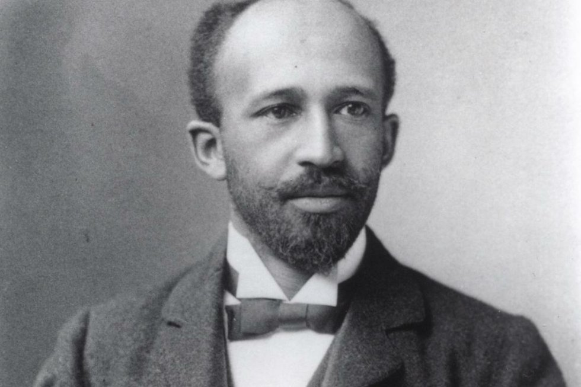

W.E.B. Dubois
African-American Civil right activists

William Edward Burghardt Du Bois
A timeline of W.E.B Dubois accomplishments and life
- 1868 - Born in Great Barrington, Massachusetts
- 1885 - Attend Fisk Univeristy in Nashville Tennessee
- 1886 - Taught school his sophmore year.His travel to and residency in the South was Du Bois's first experience with Southern racism.
- 1888 - Recieve a degree from Fisk Univeristy and attend Harvard College
- 1890 - Dubois recieve his second degree from Harvard
- 1891 - Dubois recieve a scholarship to attend the sociology graduate school at Harvard
- 1892 - Du Bois received a fellowship to attend the University of Berlin
- 1894 - Du Bois accepted a teaching job at Wilberforce University
- 1895 - Du Bois was the first African American to earn a Ph.D. from Harvard University
- 1896 - While at Wilberforce, Du Bois married Nina Gomer, one of his students, on May 12, 1896.
- 1897 - Du Bois presented a paper in which he rejected Frederick Douglass's plea for black Americans to integrate into white society
- 1900 - Du Bois attended the First Pan-African Conference, held in London from July 23 to 25. n the first decade of the new century, Du Bois emerged as a spokesperson for his race, second only to Booker T. Washington.
- 1903 - In an effort to portray the genius and humanity of the black race, Du Bois published The Souls of Black Folk (1903), a collection of 14 essays.
- 1905 - In 1905, Du Bois and several other African-American civil rights activists – including Fredrick L. McGhee, Jesse Max Barber and William Monroe Trotter – met in Canada, near Niagara Falls.There they wrote a declaration of principles opposing the Atlanta Compromise, and incorporated as the Niagara Movement in 1906.
- 1910 - NAACP leaders offered Du Bois the position of Director of Publicity and Research
- 1919 - Du Bois traveled to Europe to attend the first Pan-African Congress
- 1920 - Du Bois published Darkwater: Voices From Within the Veil, the first of three autobiographies he would write.
- 1926 - Nine years after the 1917 Russian Revolution, Du Bois extended a trip to Europe to include a visit to the Soviet Union.
- 1929 - a debate organised by the Chicago Forum Council billed as "One of the greatest debates ever held" was held between Du Bois and Lothrop Stoddard, a member of the Ku Klux Klan, proponent of eugenics and so called scientific racism.
- 1945 - Du Bois was a member of the three-person delegation from the NAACP that attended the 1945 conference in San Francisco at which the United Nations was established.
- 1949 - Du Bois spoke at the Scientific and Cultural Conference for World Peace in New York
- 1950 - at the age of 82, Du Bois ran for U.S. Senator from New York on the American Labor Party ticket and received about 200,000 votes, or 4% of the statewide total.
- 1958 - Du Bois visited Russia and China
- 1961 at the age of 93, Du Bois and his wife traveled to Ghana to take up residence
- 1963 Du Bois's health declined during the two years he was in Ghana, and he died on August 27, 1963, in the capital of Accra at the age of 95.